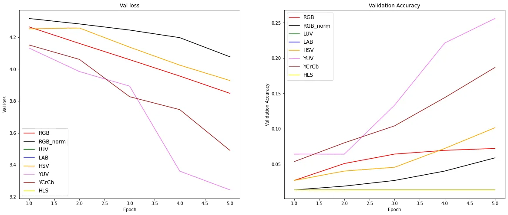

Oluwaseun Ilori
Computer Vision Researcher
MSc Computer Science (AI) · Babcock University
My research focuses on computer vision and Edge AI for real-world applications. I work on object detection, semantic segmentation, OCR systems, and depth estimation — with published work spanning malaria diagnostics, explainability in medical AI, and embedded surveillance systems.
Publications
Research in computer vision, explainable AI, and intelligent systems.
My published work spans malaria detection, explainable AI in healthcare, and embedded surveillance systems.
Selected publications

Performance Evaluation of YOLOv12 Models for Malaria Parasite and White Blood Cell Detection
Peer-reviewed study evaluating YOLOv12 variants for malaria microscopy detection, with emphasis on robust counting performance and practical diagnosis support.
View project
Explainable AI: A Systematic Literature Review Focusing on Healthcare
Systematic review of explainable AI methods in healthcare, covering interpretability trends, adoption concerns, and opportunities for trustworthy ML systems.
View project
Design and Implementation of a Smart Surveillance System
Engineering paper describing a Raspberry Pi-based surveillance system that combines sensing, RFID validation, and automated alerts for rapid incident response.
View projectSelected Projects
Research projects in computer vision and applied machine learning.
Systems I have built for detection, segmentation, recognition, depth estimation, and OCR.

Aerial Semantic Segmentation
Built a semantic segmentation workflow for aerial imagery, combining custom OpenCV augmentation with a MobileNetV3-small U-Net architecture for low-data training.
View project
Malaria Parasite Detector
Trained an object detection system to count malaria parasites and white blood cells, then packaged prediction behind a custom FastAPI service deployed with Docker on Google Cloud.
View project
License Plate Reader and Custom OCR
Built the full ANPR pipeline for Nigerian plates, from data preparation and annotation tooling to object detection, custom OCR, and threshold adjustment with a regression model.
View project
Face Recognition and Tracking
Developed a real-time face recognition workflow with multi-object tracking for continuous identity matching in video streams.
View project
Monocular Depth Estimation
Implemented a custom ResNet18 encoder-decoder with skip connections for monocular depth estimation and trained it on the NYU-v2 dataset.
View projectExperience
Roles in computer vision engineering, teaching, and research.
My experience spans model development, deployment, and academic instruction.
Selected wins
- Won the 2022 MathWorks MiniDrone Competition virtual round in the EMEA region, finishing ahead of 330+ teams.
- Published peer-reviewed research spanning malaria detection, explainable AI in healthcare, and smart surveillance systems.
- Designed systems across diagnostics, OCR, object detection, segmentation, and depth estimation.
TalaNanu
May 2023 - Jun 2024Computer Vision Engineer
- Trained and deployed a fine-grained image classifier that reached 98% accuracy.
- Reduced OCR inference latency from over one minute to under 20 seconds.
- Delivered model training and deployment workflows with Docker, FastAPI, and GCP.
Babcock University
Oct 2025 - PresentTeaching Assistant and E-Tutor
- Teach machine learning, Linux system administration, C programming, and data management.
- Lead practical SQL sessions for Database Systems Design, Implementation and Management.
Zummit Africa
Nov 2021 - Mar 2022Deep Learning Intern
- Led an emotion detection project from predictive modeling through deployment.
- Supported team members who were new to deep learning workflows.
Skills
Research tools and technologies.
Frameworks, libraries, and infrastructure I use for vision research and experimentation.
Deep Learning & Vision
NLP & Language
Programming & Data
Deployment & Infrastructure
Blog Posts
Technical writing on computer vision, deployment, and applied ML.
I write about ideas, experiments, and implementation details from my computer vision projects.
Selected writing

Beyond RGB in Image Classification
A look at how different color spaces and normalization choices can affect image classification performance.
View projectDeploying OpenCV Web Application on Heroku
A practical guide to deploying an OpenCV-powered web application and handling the packaging details.
View projectCustom OCR
A breakdown of how I built a custom OCR pipeline for license plate recognition with machine learning.
View projectCertifications
Training in deep learning, computer vision, and research methods.
Deep Learning With PyTorch
Jan 2024OpenCV.org
Practical deep learning training using PyTorch for model development and experimentation.
Convolutional Neural Networks in TensorFlow
Oct 2021DeepLearning.AI
Applied CNN concepts, image workflows, and TensorFlow-based deep learning implementation.
Computer Vision for Faces
Oct 2018Big Vision LLC / LearnOpenCV
Covered image processing, OpenCV, Dlib, machine learning, and face recognition system development.
Grant Writing Class
Jun 2025Research, Innovation and International Cooperation, Babcock University
Training focused on proposal development, research communication, and funding readiness.